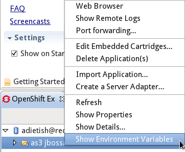
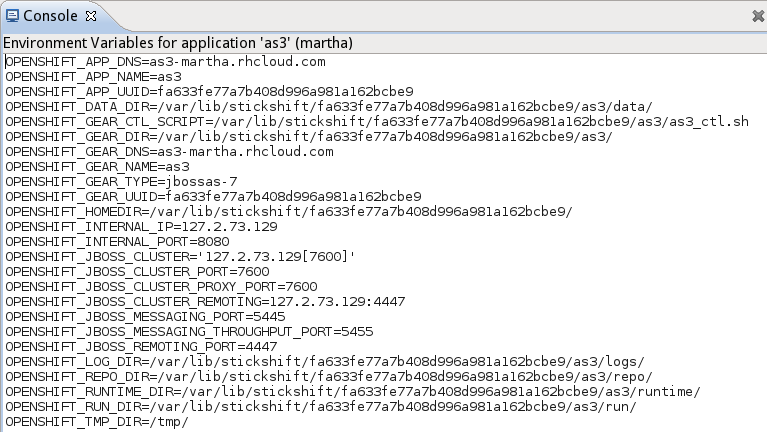
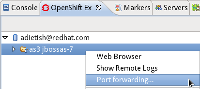
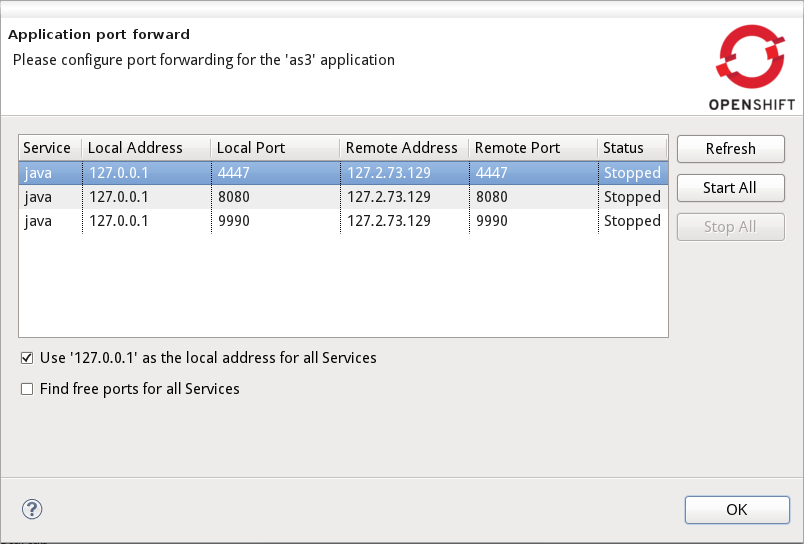
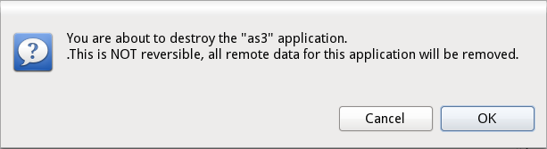
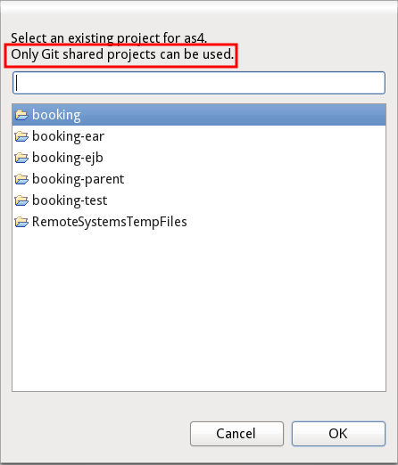
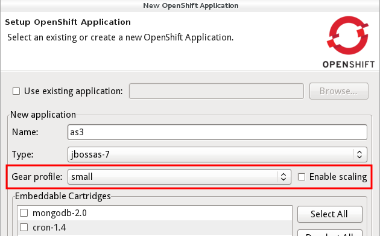

OpenShift Explorer |
|
| Show environment |
There is now a "Show environment variables" action that will open a console which shows the environment variables currently set on your application. This menu available is available on all applications in OpenShift Explorer.   |
| Port forwarding |
You can now enable port forwarding for OpenShift applications. You start it via the context menu in OpenShift Explorer. When starting port forwarding a dialog will show up with the ports that are possible to forward. In here you can press "Start All" and port forwarding will begin. To stop Port forwarding just open this dialog again and press "Stop All". The default local address is set to 127.0.0.1 and in case the remote port is not available a random one will be found for it. In case your OS supports it you can uncheck 'Use 127.0.0.1 as the local address for all services' to make it use the same local address as remote.
Finally you can click 'Find free ports for all services' in case you do not want to use the default remote port numbers. Related Jira, |
| Delete Domain |
You can now Delete a domain including all its application by checking "Force application deletion" in the Delete domain action. Be aware that this action is not possible to undo. Thus be sure you have proper backup of the data you need from these applications.  |
OpenShift Application Wizards |
|
|
Import into any existing project
|
Import of OpenShift applications is now no longer limited to use specific project types besides requiring it is either shared with Git or not Team shared at all. Previous versions require it to be java/WTP project. B3 has a typo in the label - it is not only git shared projects, you can also select non-shared projects. |
| Scalable applications |
Recent versions of OpenShift allows creation of scalable applications and also specify the size of the gear your application will run on. The application wizard now supports this and the settings available to you depend on your account type. If you do not care for scaling or gear size then simply just leave the default values as is.  |
OpenShift Server Adapter |
|
| Multimodule projects | OpenShift applications can now be multimodule maven projects and is handled both by the import wizard and server adapter. |
OpenShift Java Client |
|
| REST client |
We rewrote the existing openshift-java-client to use the new RESTful service that's now available for OpenShift. It's already pretty stable since this is what we use in our Eclipse based tooling. The source is hosted at github: https://github.com/openshift/openshift-java-client/tree/rest |